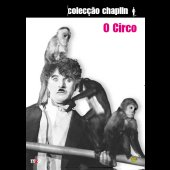

|

"The Circus" (1928 - 96m)
SINOPSE
Nova transferência digital feita a partir dos arquivos da família Chaplin e elementos áudio.
Na primeira Gala dos Óscares da Academia, Charles Chaplin foi homenageado com uma estatueta especial por "versatilidade e génio demonstrados no argumento, representação, realização e produção de O Circo". E, evidentemente, por ter trazido o som do riso a milhares de salas de cinema por todo o mundo.
Quando o encontramos, pela primeira vez, nesta jóia da comédia, Charlot está novamente embrenhado nos seus habituais apuros: está falido e esfomeado, destinado a apaixonar-se e, com igual certeza, fadado a perder o alvo do seu amor. Confundido com um carteirista e perseguido por um polícia para dentro de um circo, o Vagabundo acaba por se tornar uma estrela de Circo quando os espectadores pensam que a hilariante perseguição é mais uma parte do espectáculo. Alguns dos momentos inesquecíveis deste clássico do riso incluem uma cena numa casa de espelhos, a forma como o Vagabundo destrói completamente um espectáculo de magia e a sua espectacular performance na corda bamba com macacos pendurados na sua cabeça. Comédia pura... e sem rede!
Realizador
. Charles Chaplin
Intérpretes
. Al Ernest Garcia
. Merna Kennedy
. Harry Crocker
. George Davis
. Henry Bergman
. Tiny Sandford
. John Rand
. Steve Murphy
. Charles Chaplin
|
VIDEO
Standard 1.33:1 [4:3]
Preto e Branco
AUDIO
Inglês Dolby Digital 5.1
Inglês Mono
LEGENDAS
Português
Inglês
Francês
Italiano
Espanhol
Alemão
Holandês
Finlandês
Hebraico
Islandês
Norueguês
Sueco
Croata
Checo
Grego
Húngaro
Polaco
Turco
Russo
OPÇÕES ESPECIAIS
. Menus Interactivos
. Acesso Directo às Cenas
. Apresentação de David Robinson (6 minutos).
. O biógrafo de Chaplin fala do contexto histórico e cinematográfico do filme.
. Chaplin Hoje: O Circo (26 minutos).
. Documentário de François Ede com a participação do premiado realizado Emir Kusturica.
. Cenas excluídas (10 minutos).
. Chaplin, o cavaleiro de circo e a artista da corda bamba vivem um acidentado encontro.
. 7-13 de Outubro, 1926 (26 minutos).
. Excertos das filmagens de O Circo.
. Filmes caseiros Mountbatten (7 minutos).
. Três filmes caseiros dos arquivos do Lorde Louis Mountbatten:
- Chaplin no set de O Circo.
- Chaplin visita Douglas Fairbanks no set de The Gaucho.
- The Sacrifice, uma comédia improvisada filmada numa praia com Chaplin a representar um Rei de uma Ilha dos Mares do Sul.
. Antestreia em Hollywood - 1928 (6 minutos).
. Reportagem sobre a antestreia em Los Angeles de O Circo, um evento com algumas das maiores estrelas da época.
. Câmara a, Câmara b (1 minuto). Imagens filmadas, em simultâneo, pelas duas câmaras que
foram usadas ao longo das filmagens de todo O Circo.
. Experiência 3-D de Roland Totheroh (2 minutos).
. Uma experiência em filmes a 3 dimensões pelo fotógrafo - chefe dos estúdios Chaplin.
. Circus Day com Jackie Coogan – Excertos (12 minutos).
. A jovem estrela de O Garoto de Charlot interpreta o papel principal nesta adaptação cinematográfica de um popular livro infantil sobre as aventuras do pequeno Toby Tyler
num circo ambulante.
. Galeria de fotos
. Fotografias de produção, cenas inéditas, desenhos, cenários, Merna Kennedy
. Posters de Cinema
. Trailers (8 minutos).
. A Colecção Chaplin (12 minutos).
DISCOS/LADOS
1 disco de 1 lado
ESTÚDIO
Charles Chaplin Productions
Warner Bros.
DISTRIBUIÇÃO
Warner Home Video Portugal
|